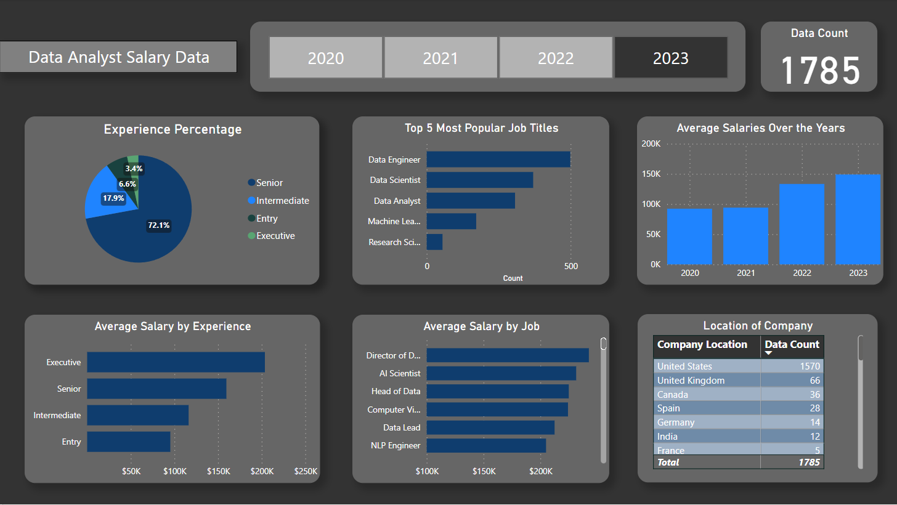

Power BI
Dashboard
Purpose
The purpose of this project to visualize data in an intuitive and interactive way. I built this project to familiarize myself with Power BI Interface and practice data visualization techniques.
Objective
- Utilize Power Query editor to clean and make the data more usable
- Create a modern dashboard for an appealing data visualization
- Obtain data from Kaggle to analyze data analyst careers
- Use DAX to manipulate data
Insights
- Power BI is a very powerful tool to use for data visualization. There are many different ways to create an intuitive interface that can give meaningful insights of data.
- A basic understanding of User Interface design is required to create an intuitive and interactive design for a general audience
- This is an introduction to Power BI as a Business Intelligence tool that can translate to other tools such as Tableau
Project Dashboard
Description
Data analyst salary data is acquired from Kaggle which spans from 2020-2023. The objective of this project is to give insight on different types of data analyst jobs and salaries. There are interactive buttons that can be switched to the different years.